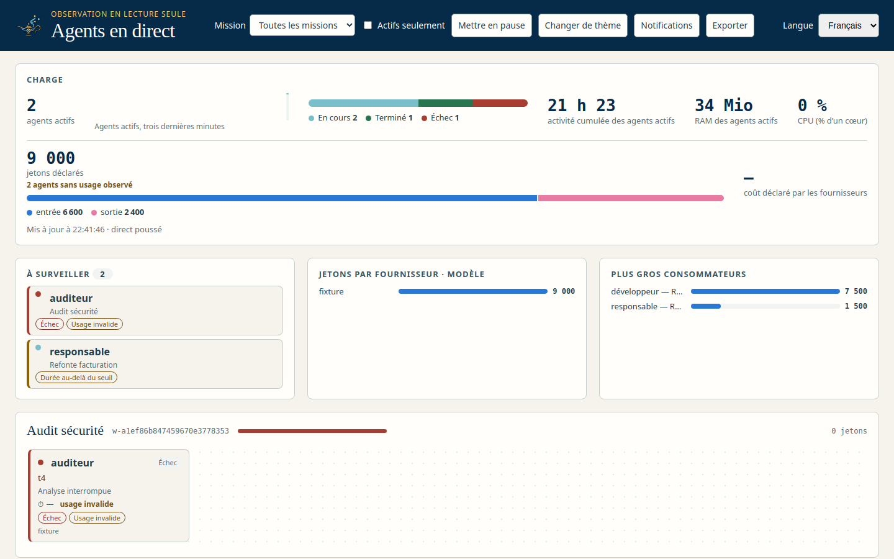

<section id="tableau" data-transition="fade" style="background:#F6F4EE;color:#14213D;font-family:'IBM Plex Sans', Arial, sans-serif;padding:128px;display:grid;grid-template-columns:520px 1fr;gap:64px;align-items:center">
<div style="display:flex;flex-direction:column;gap:32px">
<h2 style="font-size:72px;font-weight:600;line-height:1.1">Le tableau de bord</h2>
<ul style="font-size:32px;color:#4A5568;line-height:1.5">
<li>Charge, états et durée d’activité</li>
<li>Jetons déclarés, coût, par modèle</li>
<li>RAM et CPU des processus vérifiés</li>
<li>« À surveiller » : échecs, seuils, usage invalide</li>
</ul>
<p style="font-size:24px;color:#4A5568">Mis à jour par flux poussé (SSE), repli en interrogation.</p>
</div>
<div style="background:#E9E4D8;border-radius:16px;padding:24px;display:flex">

</div>
<aside>Capture réelle du binaire swarm-rust sur une Root de fixture privée. Les processus RAM/CPU sont lus dans /proc uniquement si l’identité (PID + estampille + hôte) concorde.</aside>
</section>
